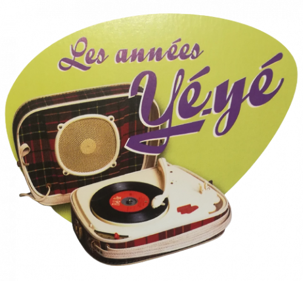
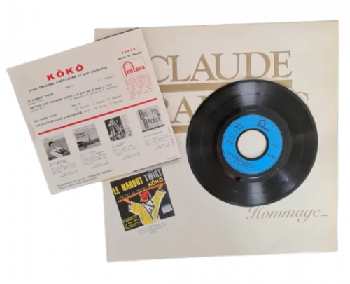
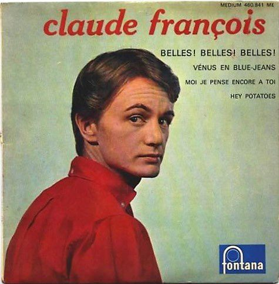
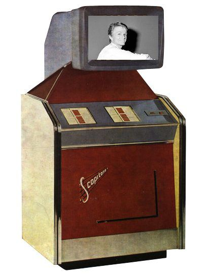
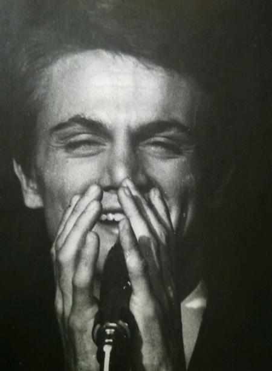
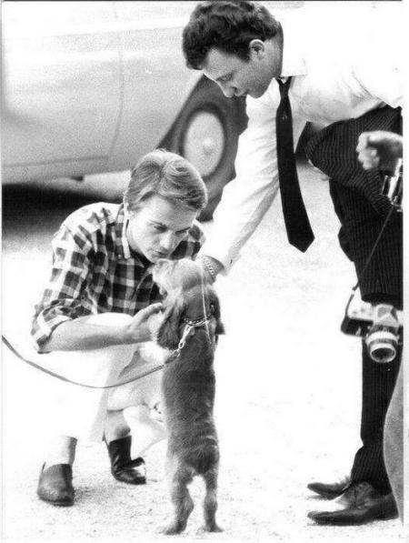

<div style="padding-right: 10px; padding-left: 1px; max-width:900px; margin:0 auto;">
<div style="padding: 4px; width: 100%; border-radius: 40px; background-image: url('https://ekladata.com/QnFWwzJcUCTiba3qdYNQyp2rlmM.gif'); background-repeat: repeat;">
<div style="padding: 20px; border-radius: 40px; box-shadow: inset 1px 2px 55px #000000; background-image: url('https://ekladata.com/p6y3nIgJkmRzuDemjP6Z5s05Jko@100x100.gif'); background-color: #000000;">
<div style="padding: 4px; box-shadow: 1px 1px 5px #000000; background-image: url('https://ekladata.com/QnFWwzJcUCTiba3qdYNQyp2rlmM.gif');">
<div style="padding: 70px; border-radius: 50px; box-shadow: inset 1px 1px 50px #000000; background-image: url('https://ekladata.com/p6y3nIgJkmRzuDemjP6Z5s05Jko@100x100.gif');">
<div style="padding: 4px; border-radius: 50px; box-shadow: 1px 1px 45px #000000; background-image: url('https://ekladata.com/QnFWwzJcUCTiba3qdYNQyp2rlmM.gif');">

<!-- ⭐ CORRECTION ICI : largeur + hauteur automatique -->
<div style="border-radius: 50px; box-shadow: inset 0px 0px 25px #000000; background-image: url('https://ekladata.com/Yiv5BJywj78m0ITU8vVm_dsrLo4@100x100.gif'); background-color: #000000; width:100%; height:auto;">

<div style="padding: 1px;">

<!-- ⭐ TON CONTENU EXACT, SANS AUCUNE MODIFICATION -->
<p style="text-align: center;"></p>

<p style="text-align: center;"></p>

          <div style="text-align: justify;">

            <p>
                
                Claude François, sous le pseudonyme Kôkô enregistre un premier 45 tours
(Fontana 460 109, en mars 1962).<br>
                
            </p>


<p style="text-align: center;"></p>

<p style="text-align: center;"><iframe title="YouTube video player" src="https://www.youtube.com/embed/bMiN7Wn5AfU?si=WmrQR049Mmd_Y2I2" frameborder="0" width="560" height="315" allowfullscreen="allowfullscreen"></iframe></p>

<p style="text-align: center;"></p>

<p style="text-align: center;"><iframe title="YouTube video player" src="https://www.youtube.com/embed/hRT9-u7zVIQ?si=vFUklYe20gZaeN5q" frameborder="0" width="560" height="315" allowfullscreen="allowfullscreen"></iframe></p>

<p style="text-align: center;"></p>

<p style="text-align: center;"></p>

<p style="text-align: center;"></p>

<p style="text-align: center;"></p>

<!-- ⭐ FIN DU CONTENU EXACT -->

</div></div></div></div></div></div></div></div></div>
